Mimi | Klein |
(tap near bottom of photos for caption)
| 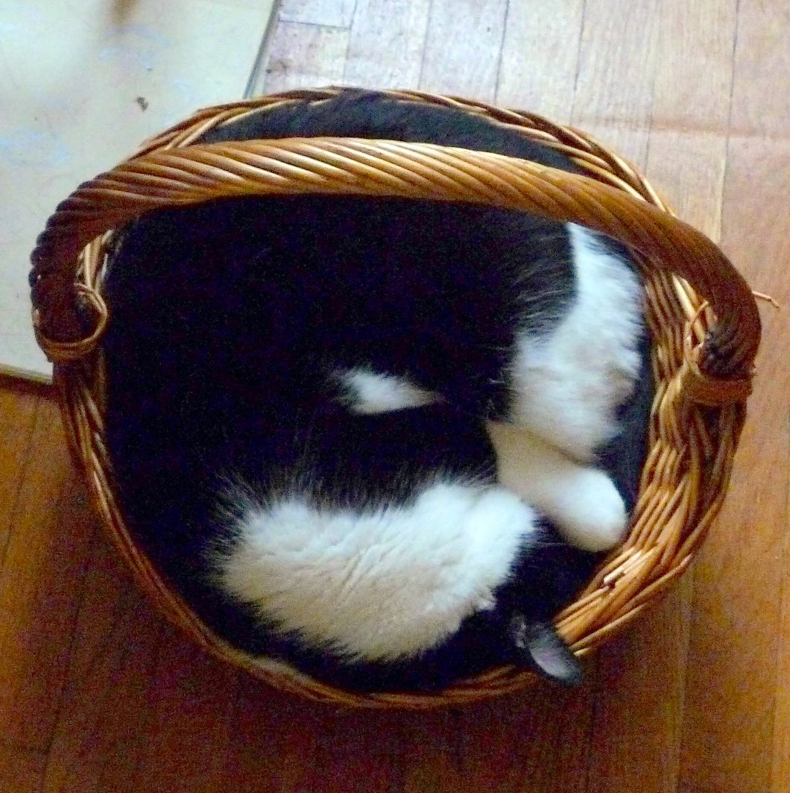 | 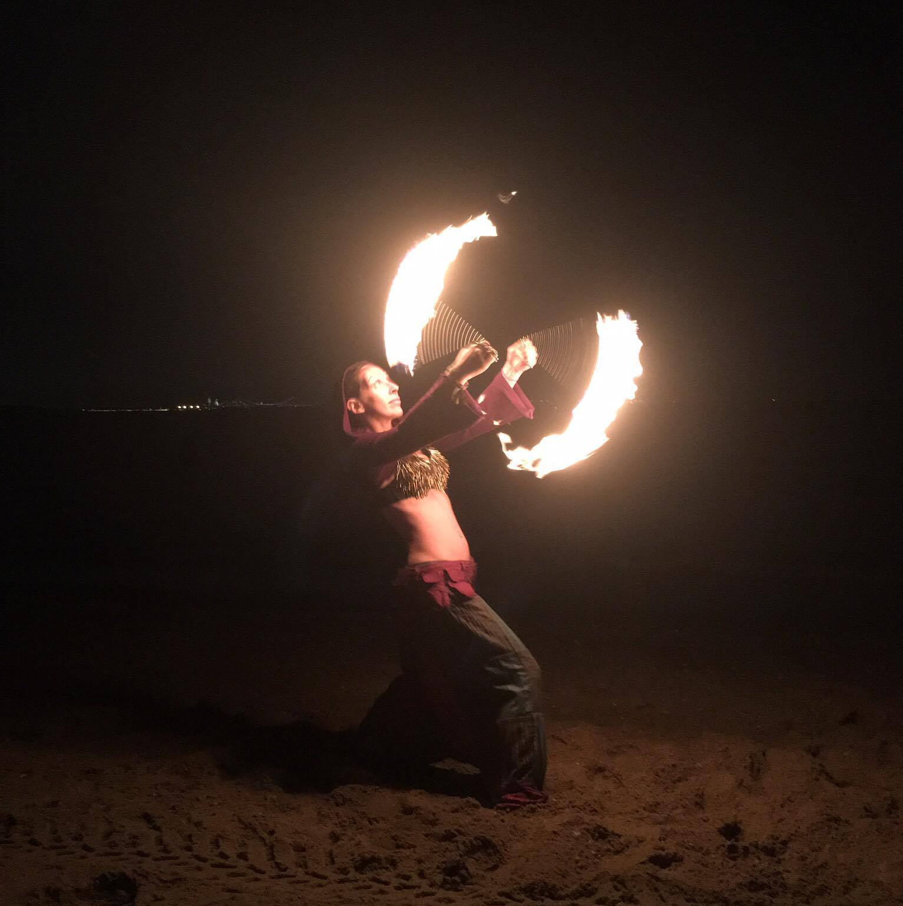 | 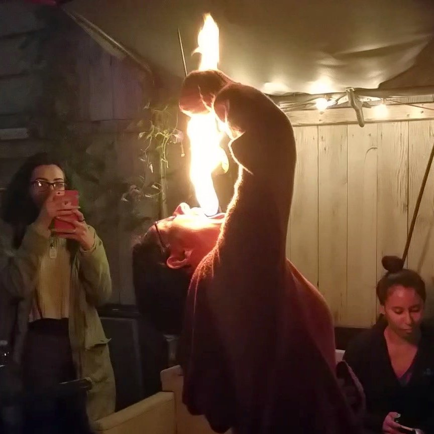 |
| 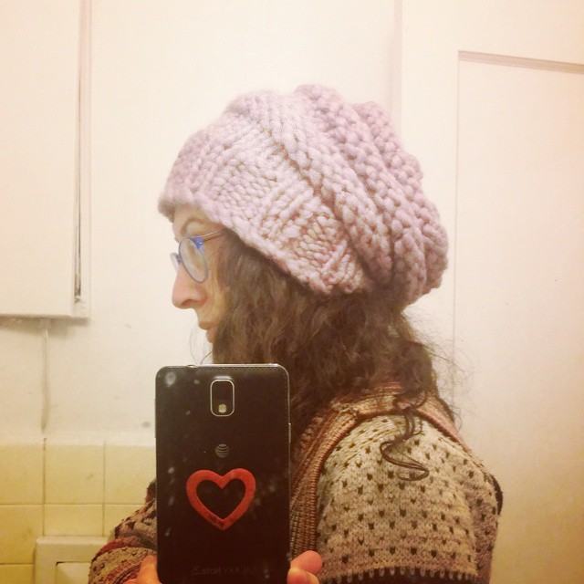 | 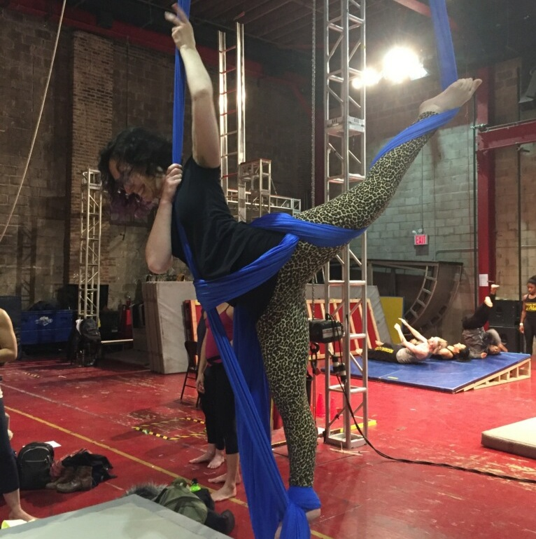 | |
| 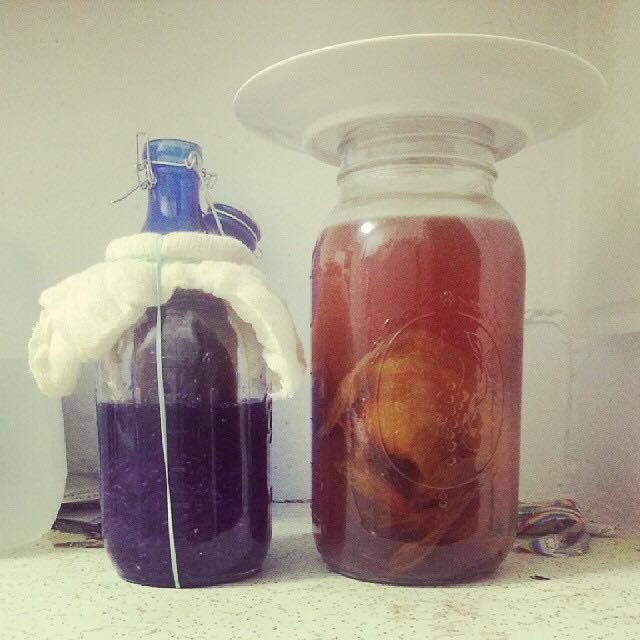 | 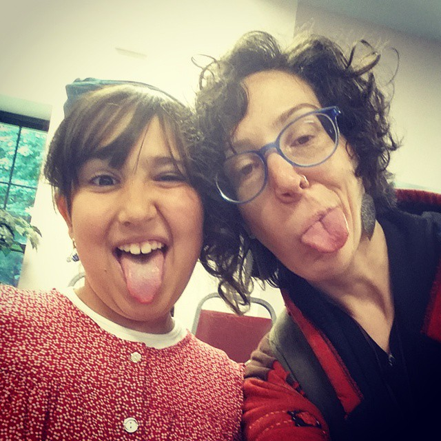 | 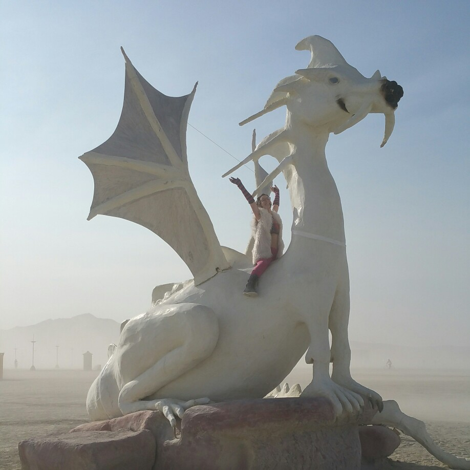 |
| 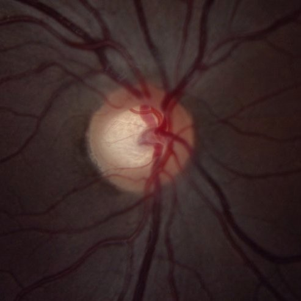 | 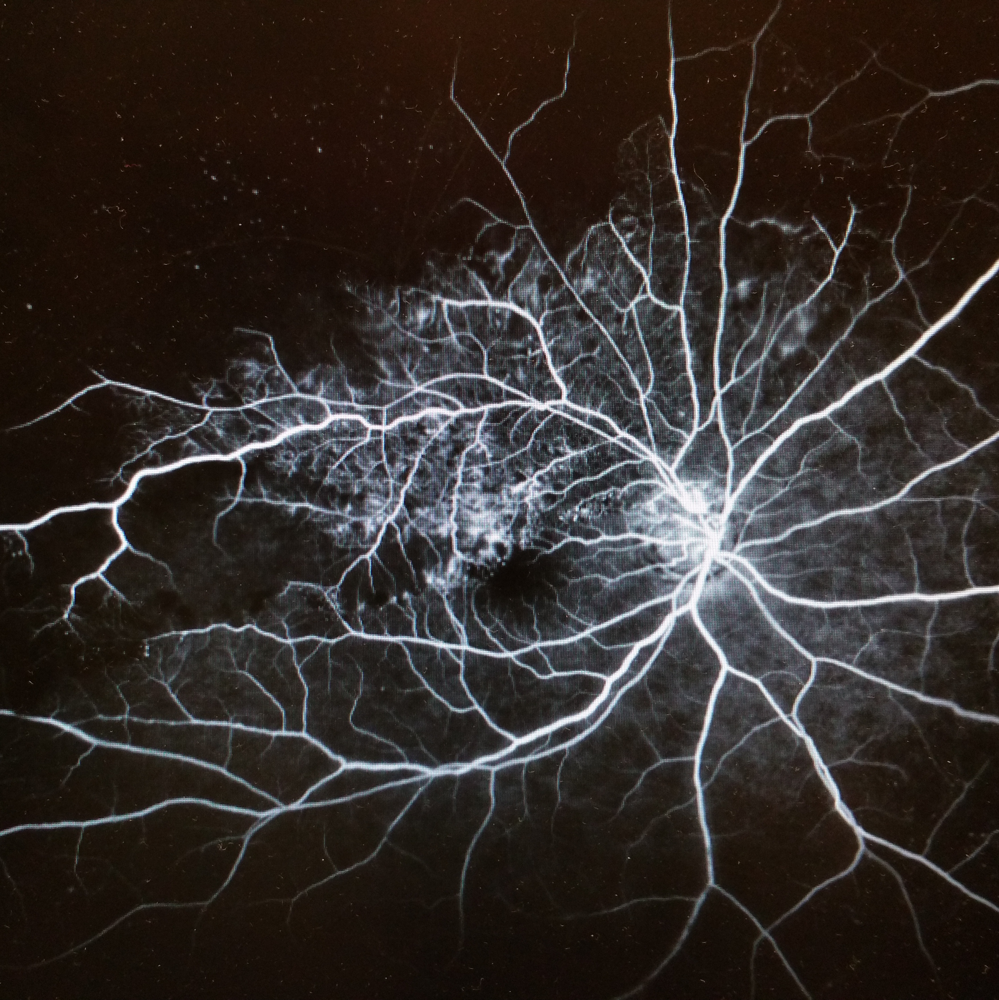 | 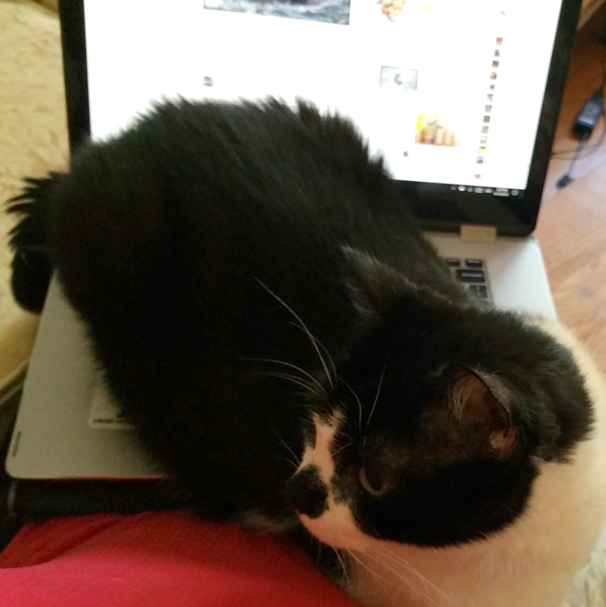 |
I live in Brooklyn, NY with my cat Mutty. I'm a fire performer; I spin poi and fire fans, and recently started eating fire. I like to knit, and I dabble in aerial silks. I sing and play guitar, and occasionally I like to ferment things. I have 6 nieces and nephews, and greatly enjoy playing the role of crazy aunt. Burning Man has been a big part of my life since 2011. I worked as an Ophthalmic Photographer for the last 10 years. Now I'm excited to learn a whole new set of skills as a Web Developer. Say hi !